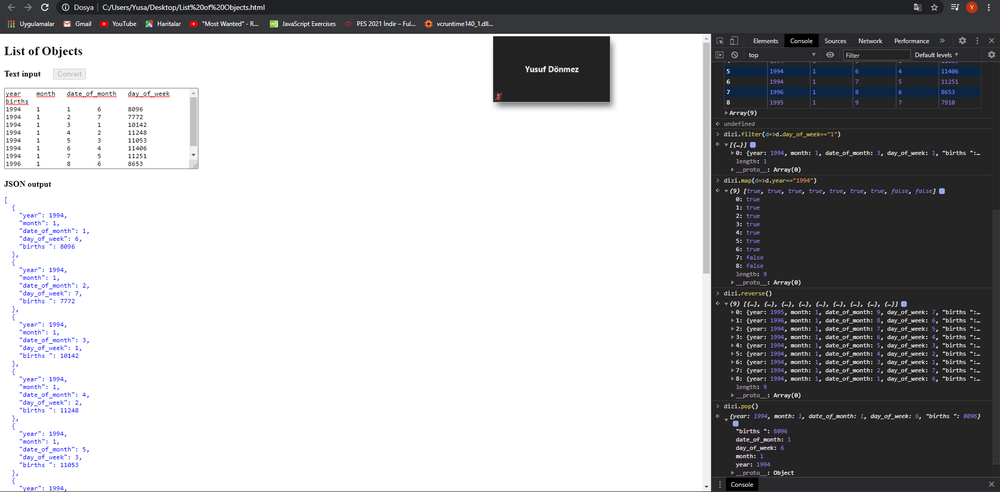
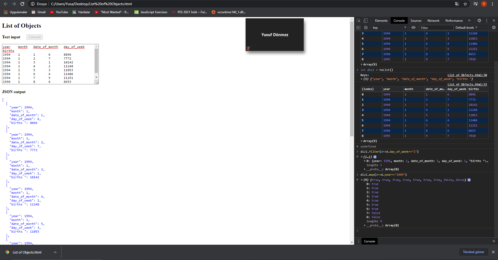

JSON output
[
{
"year": 1994,
"month": 1,
"date_of_month": 1,
"day_of_week": 6,
"births": 8096
},
{
"year": 1994,
"month": 1,
"date_of_month": 2,
"day_of_week": 7,
"births": 7772
},
{
"year": 1994,
"month": 1,
"date_of_month": 3,
"day_of_week": 1,
"births": 10142
},
{
"year": 1994,
"month": 1,
"date_of_month": 4,
"day_of_week": 2,
"births": 11248
},
{
"year": 1994,
"month": 1,
"date_of_month": 5,
"day_of_week": 3,
"births": 11053
},
{
"year": 1994,
"month": 1,
"date_of_month": 6,
"day_of_week": 4,
"births": 11406
},
{
"year": 1994,
"month": 1,
"date_of_month": 7,
"day_of_week": 5,
"births": 11251
},
{
"year": 1994,
"month": 1,
"date_of_month": 8,
"day_of_week": 6,
"births": 8653
},
{
"year": 1994,
"month": 1,
"date_of_month": 9,
"day_of_week": 7,
"births": 7910
}
]
function toList(str) {
function toObject(x) {
let b = {}
for (let [i,s] of x.split('\t').entries())
b[keys[i]] = (isNaN(s)? s : Number(s))
return b
}
if (str) inp.value = str
else str = inp.value
convert.disabled = true
let [d0, ...data] = str.split('\n')
let keys = d0.split('\t')
console.log("Keys:", keys)
let a = data.map(toObject)
out.innerText = JSON.stringify(a, '' ,2)
console.table(a)
return a
}
Ref: Rest Parameters
"Ekran Görüntüsü: " Resmim>
"Ekran Görtünüsü 2 : " Resmim2>
"Bulduğum dataseti kodun içerisine yerleştirdim. Sonrasında filter ve map fonksiyonlarını kulladnım. Ayrıca reverse ve sort fonksiyonlarınıda kullandım."